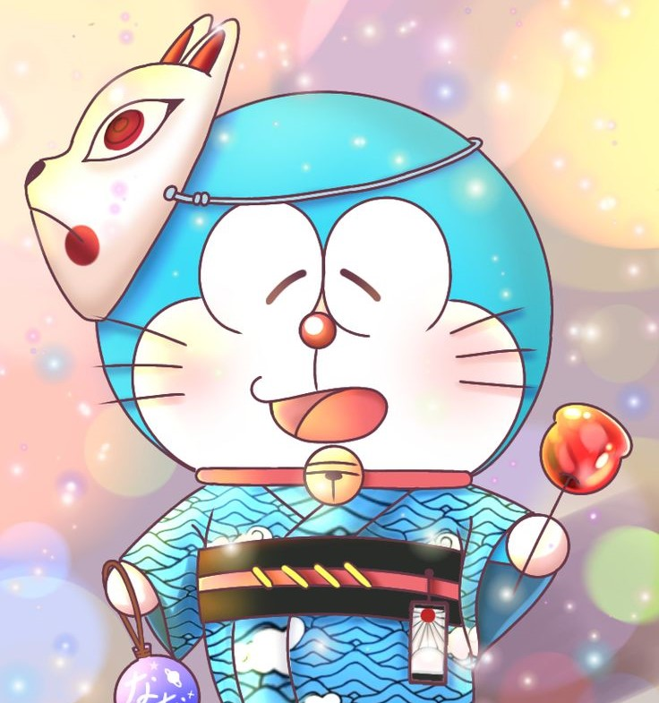

Image Style

Dorayaki is his favourite food. Doraemon is addicted to dorayaki and falls for any trap involving them.
Doraemon is very friendly and intelligent, not to mention long-suffering because of Nobita's antics.

Mii-chan is doraemon's crush.
She to Doraemon is similar with Shizuka to Nobita.